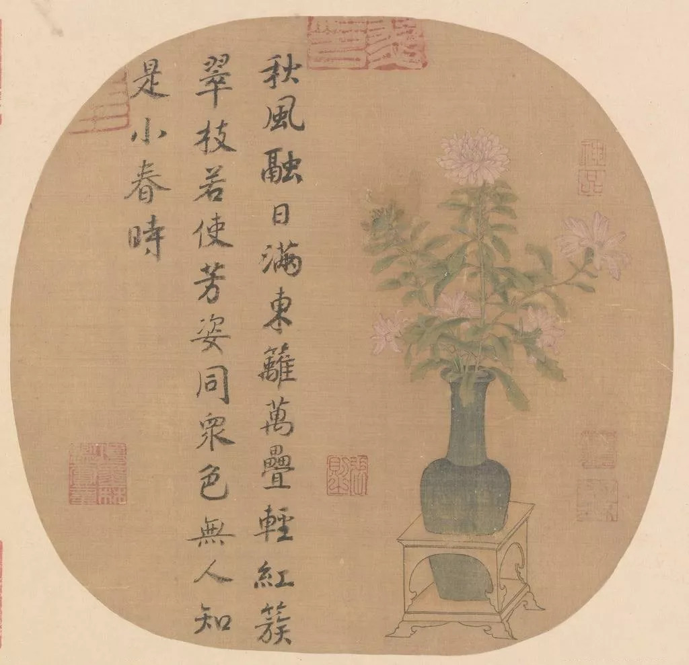

您的位置:首页 > 宋词词选
词是一种音乐文学，它的产生、发展，以及创作、流传都与音乐有直接关系。词所配合的音乐是燕乐，又叫宴乐，为隋唐时主要用于娱乐和宴会的演奏，隋代已开始流行。而配合燕乐的词的起源，也就可以上溯到隋代。宋代王灼《碧鸡漫志》卷一说：“盖隋以来，今之所谓曲子者渐兴，至唐稍盛。”
词最初主要流行于民间，《敦煌曲子词集》收录的一百六十多首作品，大多是从盛唐到唐末五代的民间歌曲。大约到中唐时期，诗人张志和、韦应物、白居易、刘禹锡等人开始写词，把这一文体引入了文坛。到晚唐五代时期，文人词有了很大的发展，晚唐词人温庭筠以及以他为代表的“花间派”词人以李煜、冯延巳为代表的南唐词人的创作，都为词体的成熟和基本抒情风格的建立作出了重要贡献。
词终于在诗之外别树一帜，成为中国古代最为突出的文学体裁之一。进入宋代，词的创作逐步蔚为大观，产生了大批成就突出的词人，名篇佳作层出不穷，并出现了各种风格、流派。《全宋词》共收录流传到现如今的词作一千三百三十多家将近两万首，从这一数字可以推想当时创作的盛况。

©淘气汉子Urchins